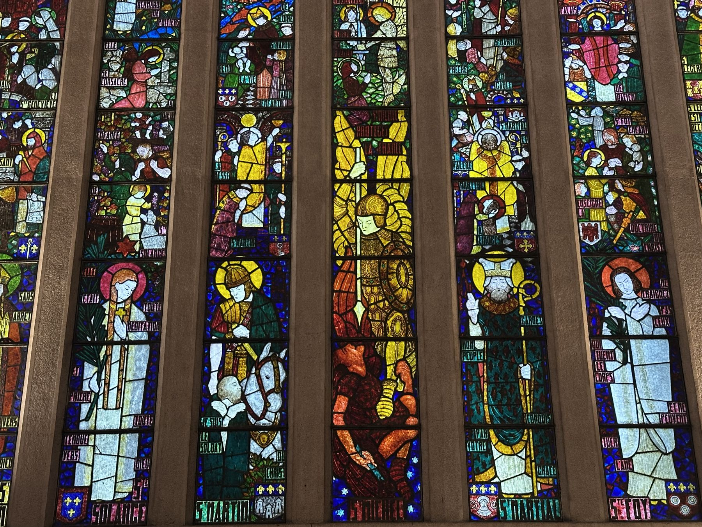

Nous rejoindre
La Schola Sainte-Odile accueille avec plaisir toutes les nouvelles voix. Veuillez contacter les chefs de chœur à l'issue des offices, ou les joindre à l'adresse ci-dessous.

Répétitions
- Quand
- Le vendredi soir, de 19 h 30 à 21 h 15
- Où
- À l'église Sainte-Odile, 2, avenue Stéphane-Mallarmé, 75017 Paris, sauf contre-ordre
- Voix
- Toutes les voix sont recherchées.
Contact
Écrivez à scholasainteodile@gmail.com.